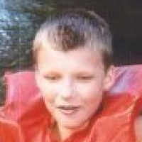

class: middle, center # Game Jams & itch.io <img src="itchio-logo.png" width="50%" /> [https://itch.io](https://itch.io) · [@itchio](https://twitter.com/itchio) March 16, 2019 --- # Hi  My name is Leaf Corcoran. <div style="clear:both"></div> * https://leafo.itch.io * https://github.com/leafo * https://twitter.com/moonscript * https://leafo.net ??? Here are some places where you might see me on the internet --- class: center, middle ## I'm the founder of itch.io --- class: center, middle <img src="homepage.png" style="width: 100%" alt="" /> --- class: middle, center # Some questions for you --- class: middle # Some questions for you * Raise hand if you've used itch.io --- class: middle # Some questions for you * Show me some hands if you've submitted to jams on itch.io --- class: middle # Some questions for you * And who has hosted jams on itch.io? --- class: middle # Some questions for you * Lastly, are you likely or interested in hostng a jam on itch.io in the future? --- class: middle <div style="display: flex; align-items: center; justify-content: center;"> <div> <img src="ld2.gif" style="display: inline-block; width: 50%; " alt="" /> <img src="ld4.gif" style="display: inline-block; width: 50%; " alt="" /> </div> </div> --- class: middle, center # Game Jams in charts --- class: middle, center <img src="jams_per_month.png" alt="" style="max-width: 100%" /> --- class: middle, center ### Over 5,000 jams have been hosted on itch.io <img src="total_jams.png" alt="" style="max-width: 100%" /> --- class: middle, center <img src="submissions_per_month.png" alt="" style="max-width: 100%" /> --- class: middle, center <img src="total_submissions.png" alt="" style="max-width: 100%" /> --- class: middle, center <div class="legend"> <div class="swatch" style="background-color: #7ED6D7;"></div> Hosted on itch.io <div class="swatch" style="background-color: #FB9175"></div> Hosted on elsewhere (Ludum Dare, GGJ) </div> --- class: middle, center # Jams are easier than ever to host and participate in --- class: middle, center <em style="font-size: 16px; float: right;">Only includes jams that have ended</em> <div class="legend"> <div class="swatch" style="background-color: #7ED6D7;"></div> No one has joined <div class="swatch" style="background-color: #FB9175"></div> At least one person joined, but no submissions </div> --- class: middle, center ### Being aware of empty jams can help us build better tools <img src="empty_rates.png" alt="" style="max-width: 100%" /> --- class: middle, center # What about jams with participants? --- class: middle, center --- class: middle, center ### People have joined jams on itch.io over 160k times --- class: middle # Joining wasn't always there * Originally, you 'joined' when you submitted your entry * We added joining to allow hosts to keep in touch with people who are interested * Hopefully encouraging more people to submit --- class: middle, center --- class: middle, center # What about jam durations? --- class: middle, center --- class: middle, center <img src="submit_rate_duration_distribution.png" alt="" style="max-width: 100%" /> --- class: middle, center # A few more graphs --- class: middle, center <img src="ranked_jams_ratio.png" alt="" style="max-width: 100%" /> --- class: middle, center <img src="ranked_jams_avg_ratings.png" alt="" style="max-width: 100%" /> --- class: middle, center <img src="private_jams.png" alt="" style="max-width: 100%" /> --- class: middle, center # Thank you <img src="itchio-logo.png" width="50%" /> [https://itch.io](https://itch.io) · [@itchio](https://twitter.com/itchio) ### Questions? Ask me on Twitter, itch.io forums, our Discord, or here! Me: [@moonscript](https://twitter.com/moonscript)